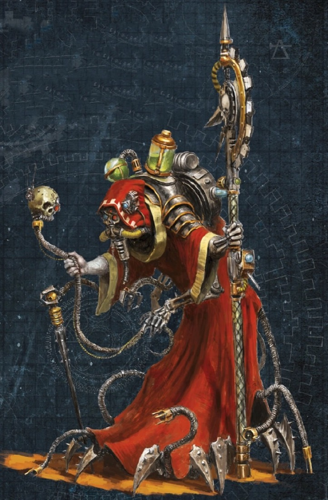

Adeptus Mechanicus
| Adeptus Mechanicus Cult of the Machine | |
|---|---|
 A Tech-priest Dominus of Mars, bearing the staff and mechadendrites of a senior magos | |
| Type | Technocratic priesthood; semi-autonomous adeptus |
| Formerly | The Mechanicum of Mars |
| Founded | In the Age of Strife as the Cult Mechanicus; integrated into the Imperium by the Treaty of Olympus; reconstituted as the Adeptus Mechanicus in 012.M31 |
| Seat | Mars |
| Deity | The Machine God, whose avatar is the Omnissiah |
| Leadership | |
| Head | Fabricator-General of Mars (a High Lord of Terra) |
| Fabricator-General | Xasandera Valdet (c. 999.M41) |
| Forces | |
Skitarii Legions Collegia Titanica Legio Cybernetica Imperial Knight houses Centurio Ordinatus Ordo Reductor | |
| Principal worlds | Mars, Graia, Metalica, Ryza, Stygies VIII, Agripinaa, Lucius, Triplex Phall |
| Symbol | A skull within a cogwheel, half flesh and half machine |
The Adeptus Mechanicus is the priesthood of the Machine God and the keeper of the Imperium's technology. It is the Imperial name for the Cult Mechanicus, the religion of the Machine God that arose on Mars in the Age of Strife, and its members, the Tech-priests, are the scientists, engineers and technicians on whom the Imperium depends for its weapons, its ships and the life-support machine of the Golden Throne. The order rules Mars and its Forge Worlds, fields armies of its own and enjoys more political and religious independence than any other adeptus.[1][2]
The Mechanicus is older than the Imperium. Before the Horus Heresy it was called the Mechanicum, and its alliance with the Emperor of Mankind under the Treaty of Olympus made the Great Crusade possible. Its priests believe that knowledge is the manifestation of divinity, that machines carry a spirit of the Machine God, and that the Emperor is the Machine God's living avatar, the Omnissiah. They therefore reject the Imperial Cult's doctrine of the God-Emperor while revering the Emperor above all.[1]
The Mechanicus is the one institution that understands the machines of the Imperium, and it understands them less than it believes. Most of its priests can no longer create, only preserve; the work of a technician is a rite of oils, resins and hymns, and innovation is regarded with suspicion. In the Era Indomitus, a faction around the Archmagos Dominus Belisarius Cawl has challenged this orthodoxy, with the encouragement of Roboute Guilliman.[2][3]
History
[edit]Mechanicum and the Age of Strife
Mars was colonised early in human history and terraformed, and during the Dark Age of Technology it shared with Terra the role of mother world to the galactic colonies. In the Age of Strife its infrastructure failed, the atmosphere collapsed and plagues killed most of its people. The survivors made a religion of preserving the technology that kept them alive. This was the Cult Mechanicus, whose priests built shelters beneath the dunes, rebuilt the machines they found and raised the first forge cities, and whose governing parliament of magi became the Mechanicum. Its Explorator fleets founded new Forge Worlds in the image of Mars.[2]
Great Crusade and Treaty
[edit]The Emperor travelled to Mars in peace and was received on Olympus Mons, where many magi acknowledged him as the Omnissiah. The Treaty of Olympus gave the Mechanicum political autonomy and exemption from the Imperial Truth, six Navigator houses and new astropath choirs, and in return it undertook to supply the armaments and ships of the crusade. The Emperor's own condition was a ban on the Silica Animus, thinking machines, and the sealing of dangerous machines in the Vaults of Moravec.[2] The magi supplied the Legions, the Skitarii, the Legio Cybernetica, the Titan Legions and the Knights that marched with them.
Schism of Mars
[edit]The ban on forbidden knowledge festered. When Horus rebelled, the Fabricator-General Kelbor-Hal declared for him in 005.M31 and the Mechanicum split in the Schism of Mars. Skitarii fought Skitarii and Titan fought Titan. Those who turned to Chaos were henceforth called the Dark Mechanicum, who fused daemons with the machine spirits of their engines. In 012.M31 the loyalists, led by Zagreus Kane, were formally recognised as the Adeptus Mechanicus, separate from the corrupted Mechanicum. Kane became its first Fabricator-General and the first High Lord to represent it. Thousands of Kelbor-Hal's captive followers were executed, and the loyal Titan Legions formed the Collegia Titanica. The Council of Terra's decision to recognise the order is recorded as having ended a long political deadlock.[4][2]
After the Heresy, Roboute Guilliman gave a secret task to the Archmagos Dominus Belisarius Cawl that would bind the order and the Space Marines for ten thousand years. The new Fabricator-General held a permanent seat among the High Lords. The Emperor, crippled in the last battle, was placed on the Golden Throne, a device so complex that only the Mechanicus can hope to maintain it.[2]
Age of Rebirth to Age of Redemption
[edit]The following millennia are recorded in the order's own annals in bursts of crisis. The Mechanicus grew more secretive. Its conflicts include the so-called Shadow War with the Inquisition over the control of records, fought in secret by deletion programs and purge protocols. In the 35th millennium, in the Nova Terra Interregnum, the Moirae Schism split the order after the rebel Forge World of Moirae was destroyed by Exterminatus, and it took more than two thousand years of warfare to purge its doctrines. In the 36th millennium a growing distrust between the Mechanicus and the Ecclesiarchy led to secret wars between the two. In the 37th millennium the Apostles of the Blind King, rogue tech-priests, devastated the north-western fringe of the galaxy before they were destroyed.[2]
Time of Ending and Era Indomitus
[edit]In the 41st millennium the order was assailed on every front. Its research outpost on Tyran was the first to meet the Tyranids, and the Tyrannic Wars destroyed several Forge Worlds, including Gryphonne IV. The Fall of Cadia drove refugees to the Forge Worlds of Agripinaa and Stygies VIII, and the loss of Titans and fleets was irreplaceable. The High Lords ordered every Forge World to increase production.[2]
The opening of the Great Rift cut the Forge Worlds off from their Explorator fleets and from each other. Seven Forge Worlds were destroyed outright, and several more were buried beneath the storms. The Necron tomb worlds awoke, and with them the long-dormant Technomandrites of Magistrakh, which struck at Mechanicus holdings from within. Meanwhile the Mechanicus claimed credit for the awakening of the primarch Guilliman and, under his orders, Cawl unlocked the vaults of the Primaris Project and awoke from stasis the armies of the Primaris Space Marines of the Ultima Founding.[2][5]

In the Indomitus Crusade, the Mechanicus sent Skitarii Legions, Legio Cybernetica maniples and Knights of House Taranis, together with fleets from more than a dozen Forge Worlds. When Guilliman returned to aid Ultramar in the Plague Wars, Mars, Ryza, Metalica and Triplex Phall sent reinforcements. Imperial records of the early 42nd millennium also record the Mechanicus's campaigns in the Rust Fields, where Forge Worlds led by Mars and Graia sent mining fleets into an asteroid belt held by Greenskins, and the war with the Necrons for blackstone deposits, in which Cawl's agents fought beside the Knights of House Taranis.[2][3]
Cawl has repeatedly asked the primarch to name him Fabricator-General of Mars. Guilliman has refused, explaining that he lacks the power to grant it, and that to try would provoke a second Martian civil war among the orthodox who regard Cawl and his innovators as heretics.[3]
Beliefs
[edit]Knowledge is divine
[edit]The Cult Mechanicus holds that knowledge is the manifestation of divinity and that all creatures and artefacts that embody it are holy. Its object of worship is the Machine God, an immanent spirit that governs all machines and knowledge and is friendly to humanity. In order to interact with the world the Machine God is held to take a physical avatar, the Omnissiah, whom the Mechanicum recognised in the Emperor. The Cult also reveres the Motive Force, the divine energy that moves all things, which is especially important to the Electro-priests. A person's worth is the sum of his knowledge, and the flesh is an imperfect machine, so Tech-priests replace organs and limbs with cybernetic parts, and the oldest retain few biological parts at all.[6]
Machine spirits
[edit]Every machine contains a minute fragment of the Machine God, a machine spirit, which controls its operation and must be addressed with respect. Tech-priests, and the Techmarines of the Adeptus Astartes whom they train, approach their machines with prayers, oils and incense, and the ritual may include the useful (lubricating an axle) and the apparently pointless (chant and libation).[6]
Quest for Knowledge
[edit]The order's chief duty is the Quest for Knowledge, the search for lost technology across the galaxy, above all the Standard Template Constructs of the Dark Age of Technology. It is governed by two codes, the Mysteries, which the Cult holds sacred, and the Warnings, which forbid, above all, the creation of thinking machines.[6]
Factions
[edit]The Cult contains several sects. The Khamrians pursue the forbidden science of artificial minds; the Omnissiads seek to summon the Machine God into an avatar other than the Emperor; the Organicists regard biological enhancement as the equal of cybernetics. Some are tolerated, while others are persecuted by the orthodox and the Inquisition as heretics.[2]
Organisation
[edit]
Leadership
[edit]The head of the order is the Fabricator-General of Mars, who is at once the secular leader of the Adeptus Mechanicus, the high priest of the Cult Mechanicus as Magos Mechanicus, and the Planetary Governor of Mars. He holds a permanent seat among the High Lords of Terra. The rulers of other Forge Worlds are also styled fabricator-general, but only the Martian one sits on the council. Below him is the Fabricator Locum, his deputy, and a hierarchy of priests, in which ranks are determined by knowledge and by the proportion of the body that has been replaced by machine.[2]
Holy orders
[edit]The term Tech-priest covers thousands of roles. The principal holy orders are:
| Order | Role |
|---|---|
| Magi | Senior Tech-priests with advanced specialisations. Their titles include Prime Hermeticon, Lord Dogma and Data-Predator. |
| Genetors | Students of the biological: the creation of cyborgs, the study of alien physiology and the genetic purity of populations. |
| Logi | Analysts, statisticians and logisticians who forecast the order's needs. They are often regarded as prophetic. |
| Artisans | Builders and restorers of weapons, ships and the great Arks Mechanicus. They control vast gangs of servitors. |
| Enginseers | Field engineers who serve with the military forces of the Imperium and the Chapters. |
| Electro-priests | Warrior-clerics devoted to the Motive Force, divided into the Corpuscarii and the Fulgurites by an ancient schism. |

Military forces
[edit]- Skitarii Legions
- The cybernetic infantry of the order, raised as menials or vat-grown and psychosurgically conditioned. Skitarii are organised into legions, macroclades, war cohorts and battle maniples, and fight beside Dunecrawlers, Ironstriders and the covert Sicarian infiltrators. Tech-priests commonly direct them from orbit by data-tether. Their elite Secutarii guard forge cities.
- Collegia Titanica
- The Titan Legions, whose god-machines are the heaviest weapons the Imperium can field. Each Titan is commanded by a princeps through a link to its machine spirit. The Collegia split in the Schism of Mars, and the loyal Legions were united in the Collegia in 012.M31.
- Legio Cybernetica
- Maniples of battle robots, who also split in the Heresy.
- Knight houses
- The noble houses of the Knight Worlds, descended from the original colonists, who pilot the Imperial Knights. They answer to the Mechanicus through the Questor Mechanicus.
- Centurio Ordinatus
- Giants of war: the great Ordinatus engines, each built to deliver a single weapon.
- Ordo Reductor
- The Bringers of Blessed Ruin, the order's corps of demolition.
Forge Worlds
[edit]The Mechanicus rules its Forge Worlds as a theocracy, and each is a planet-wide manufactory. Mars is the first. Others include Graia, Metalica, Ryza, Lucius, Stygies VIII, Agripinaa and Triplex Phall. Each has its own variant of the Cult's customs, and some have fought one another in great schisms.[2]
Duties within the Imperium
[edit]The Mechanicus supplies the Imperium with its technology, and also with many tasks that keep it running. It builds and runs the fusion plants of the Generatoriums; the Genetoriums that govern every planet's biosphere, which also serve the Inquisition in searching for impurity and mutation; the Librariums of Terra and Mars, where knowledge is stored; and the manufactoriums of the Forge Worlds. Every Space Marine Chapter pays a tithe of a twentieth of its gene-seed each year to the Mechanicus, which monitors the health of the Chapters and prepares new Foundings when the High Lords decree.[2]
Relations
[edit]- Imperial Cult
- The Mechanicus holds that the Emperor is the Omnissiah, but rejects the Ecclesiarchy's doctrine. The treaty protects it from missionary attention, and relations with the Ministorum have long been marked by suspicion.
- Inquisition
- The Ordo Machinum watches the Mechanicus, and the two have fought a long shadow war over records. The Inquisition persecutes the order's heretical sects.
- Adeptus Astartes
- The Chapters of the Iron Hands and others have close ties to Mars, and Techmarines are trained there.
See also
[edit]References
[edit]- ^ a b Codex Imperialis (rev. 980.M41). Adeptus Terra.
- ^ a b c d e f g h i j k l m n Annals of the Mechanicum (M31, restored M33). Adeptus Mechanicus, Mars.
- ^ a b c Records of the Indomitus Crusade (ongoing). Office of the Lord Commander.
- ^ Chronicles of the Heresy (sealed). Logos Historica Verita, Terra.
- ^ Cawl, Belisarius (c. 999.M41). Notes on the Ultima Founding. Mars.
- ^ a b c Canticles of the Machine God (M33). Adeptus Mechanicus, Mars.